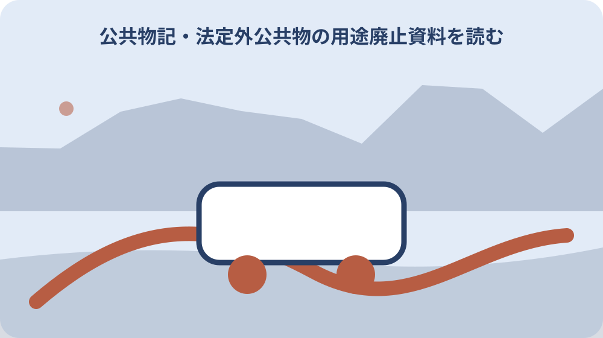

先に結論を確認する
この記事の答え：直ちには購入できません。現に公共機能があるか、管理者、境界、用途廃止の可否を事前調査で確認します。
森町で最初に照合する条件：公図の道・水表示と現地の通行・排水機能を別々に記録する。
公図の道・水を現地へ対応させる
公図に地番のない道や水があっても、現在の幅や位置を紙面だけで確定できない。公図の道・水を現地へ対応させるについて資料と現物を比べる際は、公図の道・水と現況の通路・水路を対応させても、境界が確定したことにはならない点を記録に明示します。
隣接地番、起点と終点、交差する道路や水路を地図へ記録する。公図の道・水を現地へ対応させるを家族へ引き継ぐ記録では、公図の道・水と現況の通路・水路を対応させても、境界が確定したことにはならない点を記録に明示します。
現地では通路、側溝、暗渠、耕作利用を安全な範囲から写真に残す。公図の道・水を現地へ対応させるについて担当先へ尋ねる前には、公図の道・水と現況の通路・水路を対応させても、境界が確定したことにはならない点を記録に明示します。
公図線を測量済み境界として地面へ直接当てはめない。公図の道・水を現地へ対応させるで判断を急がないためには、公図の道・水と現況の通路・水路を対応させても、境界が確定したことにはならない点を記録に明示します。
公図の道・水と現況の通路・水路を対応させても、境界が確定したことにはならない点を記録に明示します。
赤道・青線という呼称の意味をそろえる
森町は里道を赤道、水路を青線と説明し、財務局も地域呼称があると案内する。赤道・青線という呼称の意味をそろえるについて資料と現物を比べる際は、赤道・青線は地域で通じる呼称として残し、法定外公共物という分類と現在の管理者を別に確認します。
色名は公図上の由来を伝えるが、現在の管理者や機能を単独で確定しない。赤道・青線という呼称の意味をそろえるを家族へ引き継ぐ記録では、赤道・青線は地域で通じる呼称として残し、法定外公共物という分類と現在の管理者を別に確認します。
家族メモには呼称と法定外公共物という分類を併記する。赤道・青線という呼称の意味をそろえるについて担当先へ尋ねる前には、赤道・青線は地域で通じる呼称として残し、法定外公共物という分類と現在の管理者を別に確認します。
地域の言い方だけで道路法上の道路や私有通路と混同しない。赤道・青線という呼称の意味をそろえるで判断を急がないためには、赤道・青線は地域で通じる呼称として残し、法定外公共物という分類と現在の管理者を別に確認します。
赤道・青線は地域で通じる呼称として残し、法定外公共物という分類と現在の管理者を別に確認します。
公共機能の有無を自分だけで決めない
現在も通行や排水に使われるかは用途廃止の可否に関わる重要な事実である。公共機能の有無を自分だけで決めないについて資料と現物を比べる際は、通行や排水の利用状況は現場と関係者から確認し、使われていないという一人の印象で機能なしと判断しません。
草が生えて見えないことや利用者が少ないことだけで機能喪失とはいえない。公共機能の有無を自分だけで決めないを家族へ引き継ぐ記録では、通行や排水の利用状況は現場と関係者から確認し、使われていないという一人の印象で機能なしと判断しません。
利用状況、流末、地域利用を整理して建設課の事前調査へ渡す。公共機能の有無を自分だけで決めないについて担当先へ尋ねる前には、通行や排水の利用状況は現場と関係者から確認し、使われていないという一人の印象で機能なしと判断しません。
通路を塞いだり水を止めたりして機能を失わせる行為を先行しない。公共機能の有無を自分だけで決めないで判断を急がないためには、通行や排水の利用状況は現場と関係者から確認し、使われていないという一人の印象で機能なしと判断しません。
通行や排水の利用状況は現場と関係者から確認し、使われていないという一人の印象で機能なしと判断しません。

町管理と国管理の分岐を確認する
財務局は機能を有する法定外公共物を市町村、機能喪失の旧法定外公共物を国が管理する枠組みを示す。町管理と国管理の分岐を確認するについて資料と現物を比べる際は、町管理か国管理かの回答には対象範囲を添え、隣接する別の道水路へ同じ所管結論を広げません。
森町ページだけで対象財産の管理主体が確定しない案件もあり得る。町管理と国管理の分岐を確認するを家族へ引き継ぐ記録では、町管理か国管理かの回答には対象範囲を添え、隣接する別の道水路へ同じ所管結論を広げません。
地番、公図写し、現地位置を示し、どの機関が回答したかを残す。町管理と国管理の分岐を確認するについて担当先へ尋ねる前には、町管理か国管理かの回答には対象範囲を添え、隣接する別の道水路へ同じ所管結論を広げません。
国有・町有という結論を古い近隣説明だけから転記しない。町管理と国管理の分岐を確認するで判断を急がないためには、町管理か国管理かの回答には対象範囲を添え、隣接する別の道水路へ同じ所管結論を広げません。
町管理か国管理かの回答には対象範囲を添え、隣接する別の道水路へ同じ所管結論を広げません。
事前相談を本申請と分ける
森町は申請に先立ち用途廃止と払下げが可能かの事前調査を行う。事前相談を本申請と分けるについて資料と現物を比べる際は、事前相談の回答は申請受理や用途廃止決定ではないため、次に必要な様式と添付資料を確認します。
最初から測量成果一式を作るより、対象性と公共機能を確認する順が合理的である。事前相談を本申請と分けるを家族へ引き継ぐ記録では、事前相談の回答は申請受理や用途廃止決定ではないため、次に必要な様式と添付資料を確認します。
相談日、持参資料、不足資料、調査結果予定を受付メモへ記す。事前相談を本申請と分けるについて担当先へ尋ねる前には、事前相談の回答は申請受理や用途廃止決定ではないため、次に必要な様式と添付資料を確認します。
相談受付を用途廃止承認と誤って工事や占有を始めない。事前相談を本申請と分けるで判断を急がないためには、事前相談の回答は申請受理や用途廃止決定ではないため、次に必要な様式と添付資料を確認します。
事前相談の回答は申請受理や用途廃止決定ではないため、次に必要な様式と添付資料を確認します。
境界確定を独立した工程にする
用途廃止から払下げまでの費用項目に境界確定と測量が含まれる。境界確定を独立した工程にするについて資料と現物を比べる際は、境界確定の成果図は用途廃止対象の位置と隣接関係を支える資料として、申請工程と対応させます。
対象範囲が決まらなければ売買面積や登記図面も組み立てられない。境界確定を独立した工程にするを家族へ引き継ぐ記録では、境界確定の成果図は用途廃止対象の位置と隣接関係を支える資料として、申請工程と対応させます。
公共用地境界の申請案内を確認し、隣接所有者と立会資料を整理する。境界確定を独立した工程にするについて担当先へ尋ねる前には、境界確定の成果図は用途廃止対象の位置と隣接関係を支える資料として、申請工程と対応させます。
用途廃止の見込みを境界確定済みという意味にしない。境界確定を独立した工程にするで判断を急がないためには、境界確定の成果図は用途廃止対象の位置と隣接関係を支える資料として、申請工程と対応させます。
境界確定の成果図は用途廃止対象の位置と隣接関係を支える資料として、申請工程と対応させます。
同意書と添付書類を最新版で確認する
森町は用途廃止申請書、同意書、添付書類一覧を個別に公開している。同意書と添付書類を最新版で確認するについて資料と現物を比べる際は、同意書は対象者、対象財産、署名日を確認し、旧様式や別区間の同意をそのまま転用しません。
隣接者や地域関係者の確認が必要な範囲は案件ごとに異なり得る。同意書と添付書類を最新版で確認するを家族へ引き継ぐ記録では、同意書は対象者、対象財産、署名日を確認し、旧様式や別区間の同意をそのまま転用しません。
事前調査後に指定された様式名と版を記録し、署名者の資格を確認する。同意書と添付書類を最新版で確認するについて担当先へ尋ねる前には、同意書は対象者、対象財産、署名日を確認し、旧様式や別区間の同意をそのまま転用しません。
古い保存様式へ先に署名を集めず、現行資料で必要範囲を確定する。同意書と添付書類を最新版で確認するで判断を急がないためには、同意書は対象者、対象財産、署名日を確認し、旧様式や別区間の同意をそのまま転用しません。
同意書は対象者、対象財産、署名日を確認し、旧様式や別区間の同意をそのまま転用しません。
普通財産化と払下げを二段で追う
用途廃止により行政財産から普通財産へ変わり、その後に払下げ相談が可能になる。普通財産化と払下げを二段で追うについて資料と現物を比べる際は、用途廃止後の普通財産化と売払いは別工程として、決定通知と契約書の有無を個別に追います。
公共用途がなくなったことと申請者が取得したことは同じではない。普通財産化と払下げを二段で追うを家族へ引き継ぐ記録では、用途廃止後の普通財産化と売払いは別工程として、決定通知と契約書の有無を個別に追います。
承認日、財産区分変更、売買協議、契約、所有権移転を別欄にする。普通財産化と払下げを二段で追うについて担当先へ尋ねる前には、用途廃止後の普通財産化と売払いは別工程として、決定通知と契約書の有無を個別に追います。
普通財産化後も契約前に自分の土地として造成しない。普通財産化と払下げを二段で追うで判断を急がないためには、用途廃止後の普通財産化と売払いは別工程として、決定通知と契約書の有無を個別に追います。
用途廃止後の普通財産化と売払いは別工程として、決定通知と契約書の有無を個別に追います。
費用項目を着手前に見積もる
森町は境界確定、測量、売買契約、登記などの費用を申請者負担と明記する。費用項目を着手前に見積もるについて資料と現物を比べる際は、測量、登記、鑑定、申請書作成などの費用を工程別に見積もり、払下げ価格だけで総額を判断しません。
購入代金以外の専門家費用と日数が大きくなる可能性がある。費用項目を着手前に見積もるを家族へ引き継ぐ記録では、測量、登記、鑑定、申請書作成などの費用を工程別に見積もり、払下げ価格だけで総額を判断しません。
土地家屋調査士等へ依頼範囲を示し、町への費用と民間費用を分ける。費用項目を着手前に見積もるについて担当先へ尋ねる前には、測量、登記、鑑定、申請書作成などの費用を工程別に見積もり、払下げ価格だけで総額を判断しません。
払下げ価格だけを総費用として家族判断しない。費用項目を着手前に見積もるで判断を急がないためには、測量、登記、鑑定、申請書作成などの費用を工程別に見積もり、払下げ価格だけで総額を判断しません。
測量、登記、鑑定、申請書作成などの費用を工程別に見積もり、払下げ価格だけで総額を判断しません。
水路の流末と上流利用を調べる
対象部分が乾いていても、雨天時や上流からの排水機能が残る場合がある。水路の流末と上流利用を調べるについて資料と現物を比べる際は、水路では上流・下流の接続と代替排水を確認し、対象区間だけ埋めても機能へ影響しないかを相談します。
一日の観察だけでは季節的機能や地域利用を把握しきれない。水路の流末と上流利用を調べるを家族へ引き継ぐ記録では、水路では上流・下流の接続と代替排水を確認し、対象区間だけ埋めても機能へ影響しないかを相談します。
降雨後の状況、接続先、越流水、清掃履歴を町へ伝える材料にする。水路の流末と上流利用を調べるについて担当先へ尋ねる前には、水路では上流・下流の接続と代替排水を確認し、対象区間だけ埋めても機能へ影響しないかを相談します。
危険な増水時に水路へ近づかず、過去写真や聞取りで補う。水路の流末と上流利用を調べるで判断を急がないためには、水路では上流・下流の接続と代替排水を確認し、対象区間だけ埋めても機能へ影響しないかを相談します。
水路では上流・下流の接続と代替排水を確認し、対象区間だけ埋めても機能へ影響しないかを相談します。
取得後の管理まで家族で考える
払下げ後は草刈り、排水、隣地との関係、固定資産の管理が所有者側へ移る可能性がある。取得後の管理まで家族で考えるについて資料と現物を比べる際は、取得後の維持、排水、通行、境界管理を家族で検討し、所有できるかだけで意思決定しません。
細長い土地は面積が小さくても境界点や維持区間が多くなる。取得後の管理まで家族で考えるを家族へ引き継ぐ記録では、取得後の維持、排水、通行、境界管理を家族で検討し、所有できるかだけで意思決定しません。
取得目的、利用計画、維持担当、将来売却時の説明資料を先に決める。取得後の管理まで家族で考えるについて担当先へ尋ねる前には、取得後の維持、排水、通行、境界管理を家族で検討し、所有できるかだけで意思決定しません。
使い道が曖昧なまま取得だけを目標にしない。取得後の管理まで家族で考えるで判断を急がないためには、取得後の維持、排水、通行、境界管理を家族で検討し、所有できるかだけで意思決定しません。
取得後の維持、排水、通行、境界管理を家族で検討し、所有できるかだけで意思決定しません。
大石の視点：買えるかより機能を先に見る
定義、事前調査、費用負担、管理主体は公的資料で確認できる事実である。大石の視点：買えるかより機能を先に見るについて資料と現物を比べる際は、公的な用途廃止要件と、公共機能を最初に見るべきだという私の意見を分離し、最終判断は所管回答に従います。
私は不動産相談では払下げ価格より、道や水として今も誰かが使うかを最初に見る。大石の視点：買えるかより機能を先に見るを家族へ引き継ぐ記録では、公的な用途廃止要件と、公共機能を最初に見るべきだという私の意見を分離し、最終判断は所管回答に従います。
現地機能を丁寧に残せば、取得しない結論も含めて家族が判断しやすい。大石の視点：買えるかより機能を先に見るについて担当先へ尋ねる前には、公的な用途廃止要件と、公共機能を最初に見るべきだという私の意見を分離し、最終判断は所管回答に従います。
これは私見であり、用途廃止の可否は森町等の所管機関が判断する。大石の視点：買えるかより機能を先に見るで判断を急がないためには、公的な用途廃止要件と、公共機能を最初に見るべきだという私の意見を分離し、最終判断は所管回答に従います。
公的な用途廃止要件と、公共機能を最初に見るべきだという私の意見を分離し、最終判断は所管回答に従います。